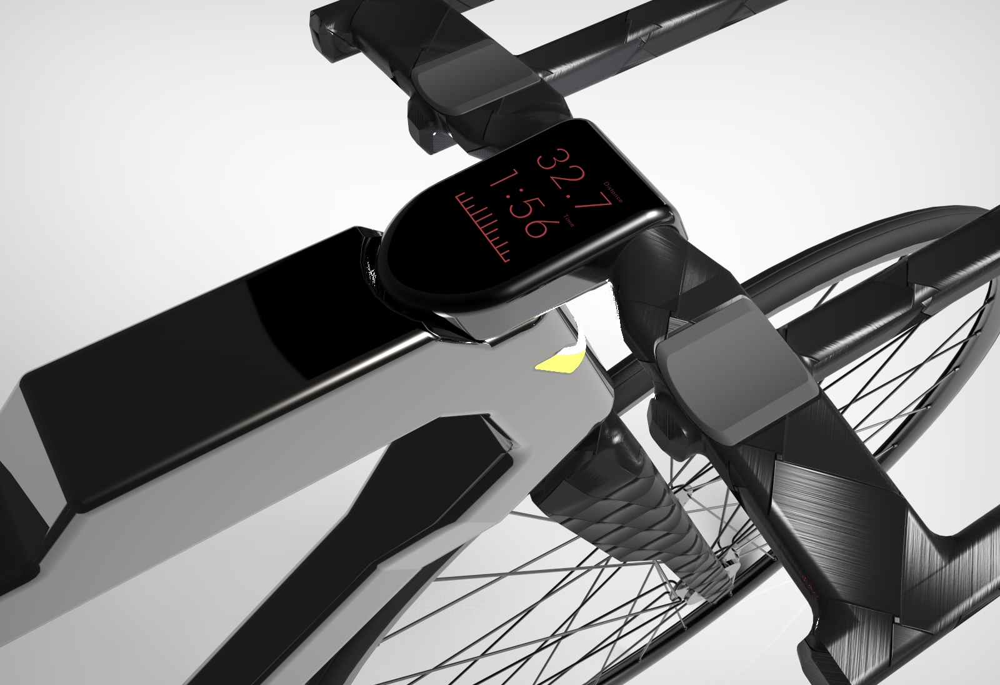
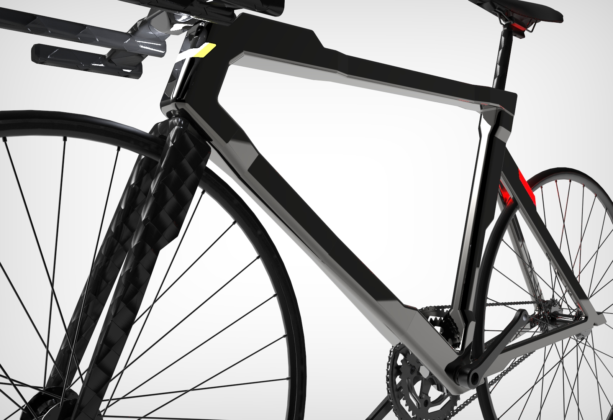
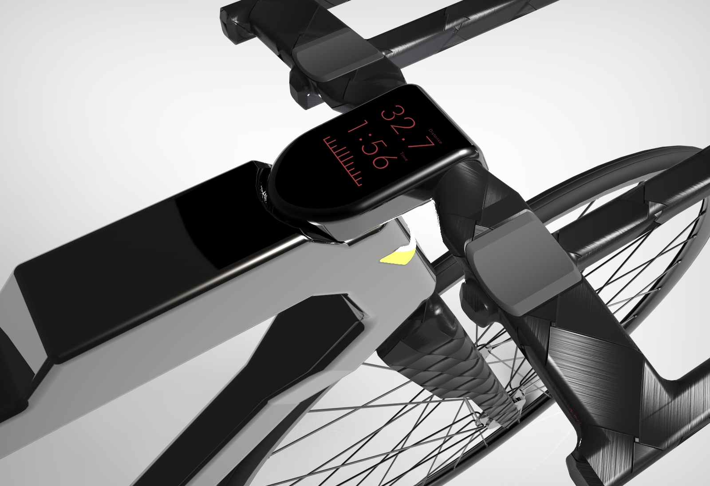
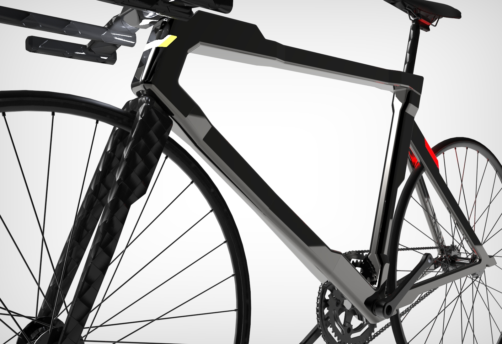
 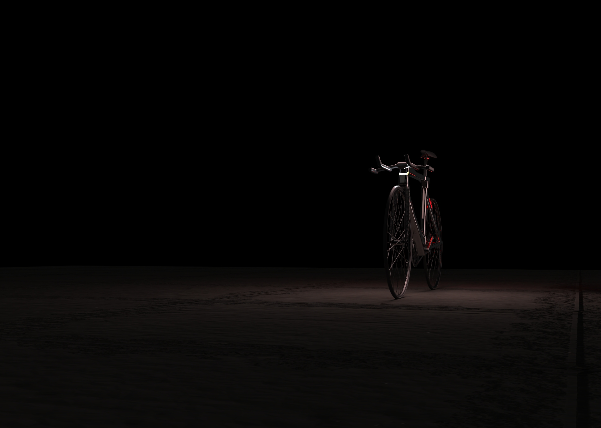
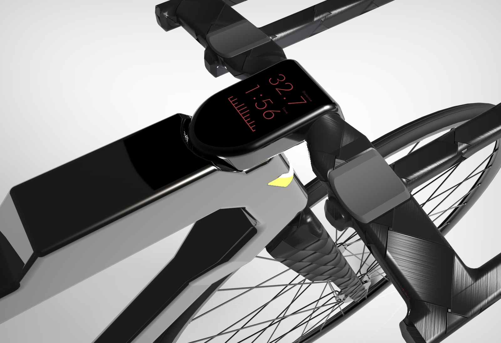
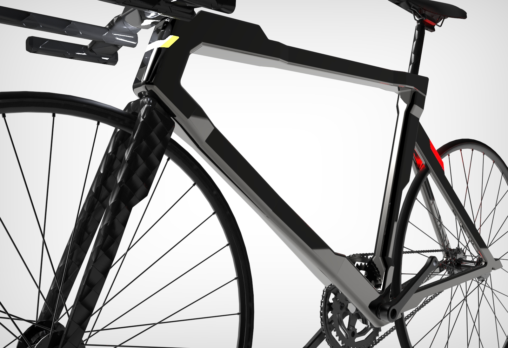
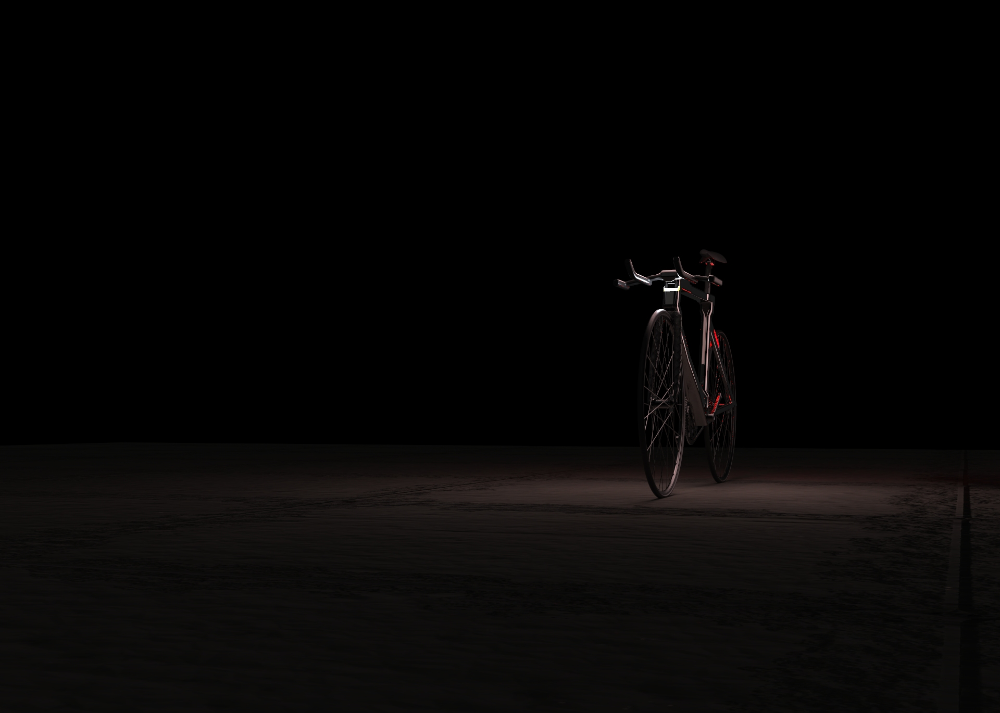
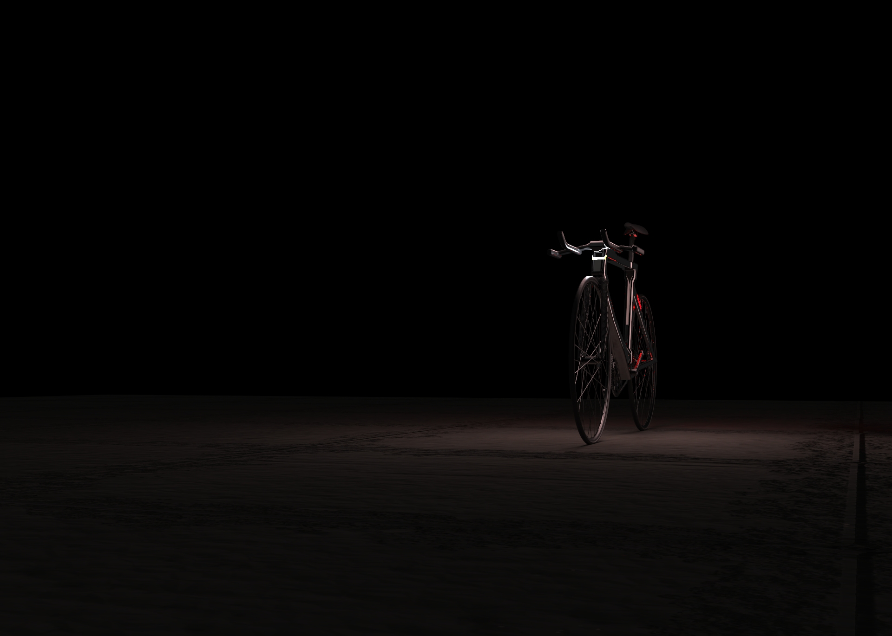
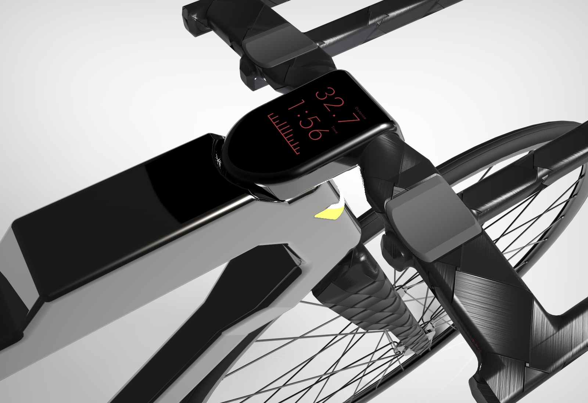
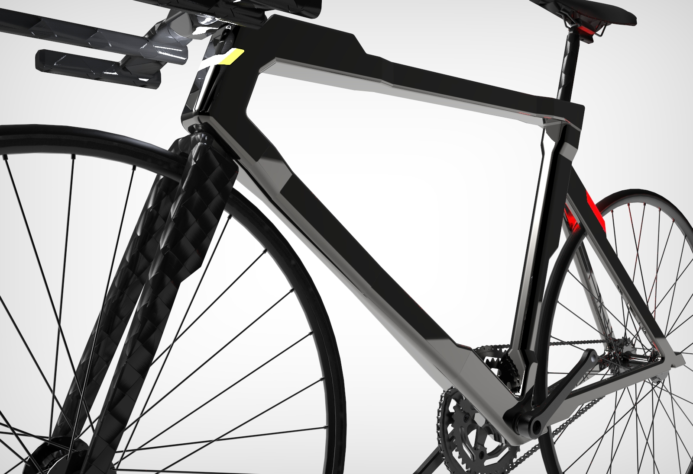
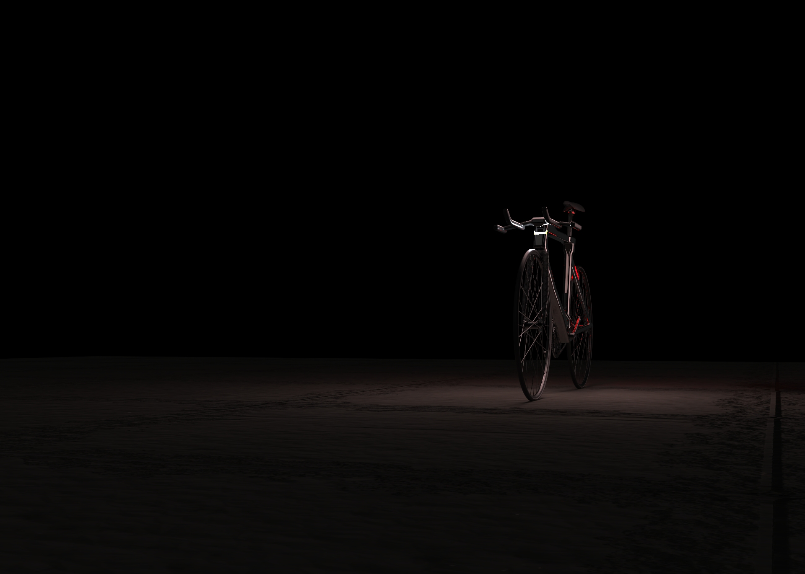
The VT-0 is an investigation into how Nissan's brand could be extended out of the automotive market. Nissan's endless innovation and pursuit of untapped markets led us to believe that there was an opportunity in the competitive cycling market in which their forward thinking design and technological experience could be applied to serve an unmet need.